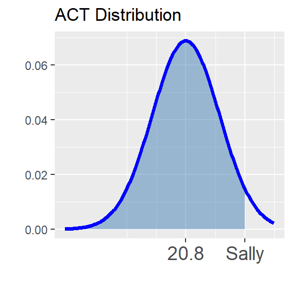
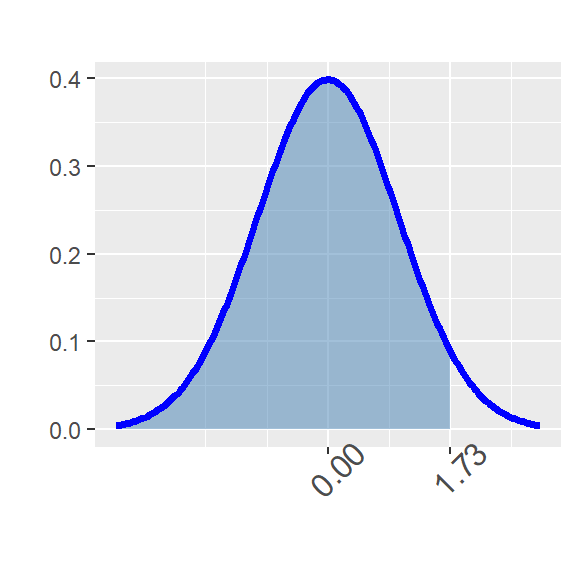
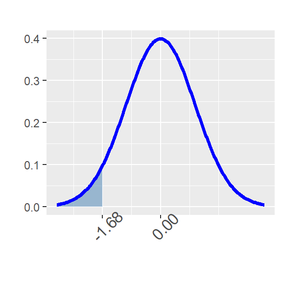
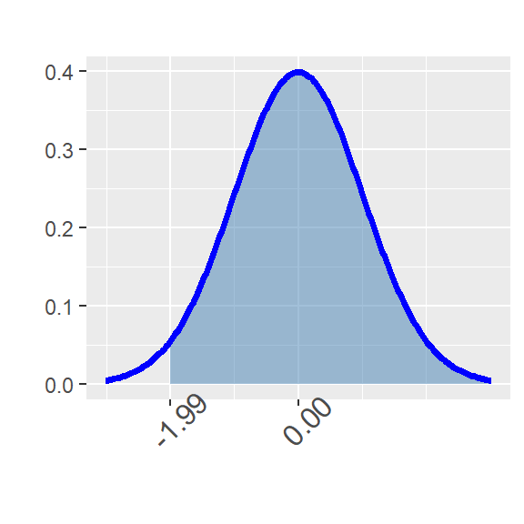
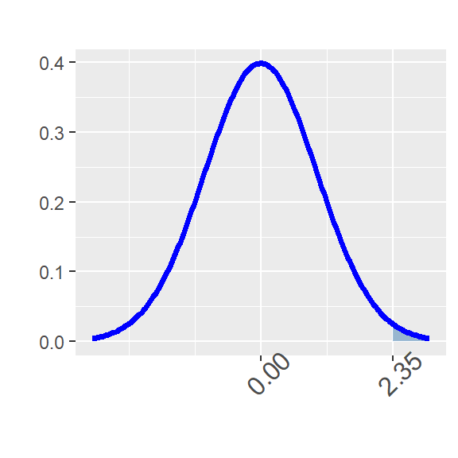
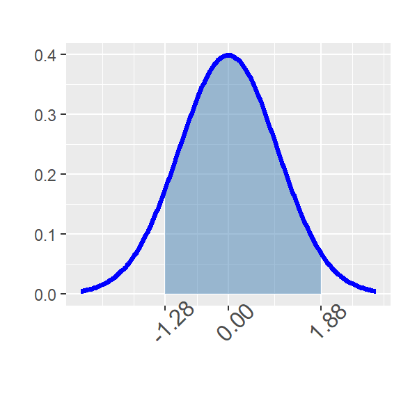
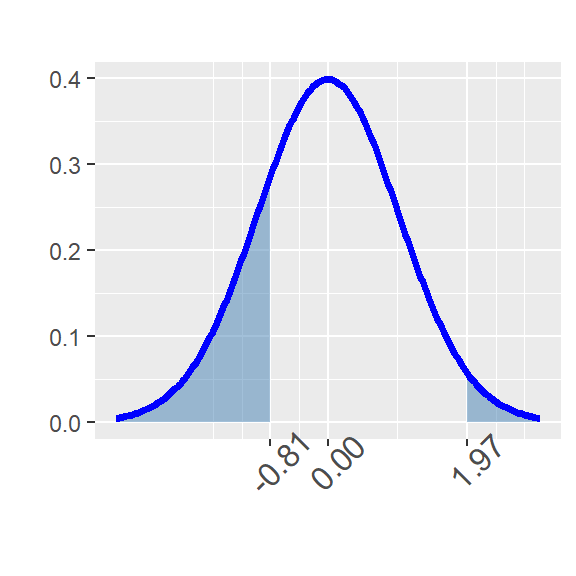
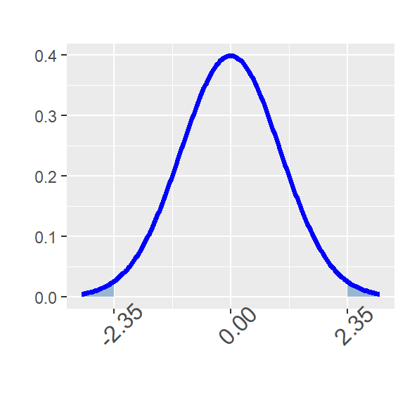

Topic 6: The Normal Distribution
Throughout this workbook we’ll investigate the probability distribution that is most central to our study of statistics: the normal distribution. If we are confident that our data are nearly normal, that opens the door to many powerful statistical methods. This workbook gives you practice in working with normally distributed data.
Objectives
Workbook Objectives: After completing this workbook you should be able to:
- Compute probabilities of events well-modeled by a normal distribution.
- Given a variable \(X\) which follows an assumed normal distribution, compute and interpret various percentile thresholds for \(X\).
- Identify scenarios to which the normal or binomial distributions can be applied, and use them to answer various probability-related questions.
The Normal Distribution
Definition: If a random variable \(X\) is normally distributed with mean \(\mu\) and standard deviation \(\sigma\), we often write \(X\sim N\left(\mu, \sigma\right)\). Three different normal distributions appear below.
- In blue is a normal distribution with \(\mu = 0\) and \(\sigma = 5\)
- In red is a normal distribution with \(\mu = 0\) and \(\sigma = 0.5\)
- In black is a normal distribution with \(\mu = 0\) and \(\sigma = 1\) (the so-called Standard Normal Distribution)

Notice that all three distributions are bell-shaped and are centered at their mean (\(\mu = 0\)). The larger the standard deviation, the shorter and wider the curve, while the smaller the standard deviation, the taller and more narrow the curve.
Given that \(X\sim N\left(\mu, \sigma\right)\), we can compute probabilities associated with observed values of \(X\) by finding the corresponding area beneath the normal curve with mean \(\mu\) and standard deviation \(\sigma\).
Properties of the Normal Distribution: We have the following properties associated with the normal distribution. Consider \(X\sim N\left(\mu, \sigma\right)\).
- The area beneath the entire distribution is 1 (since this is equivalent to the probability that \(X\) takes on any of its possible values).

- \(\displaystyle{\mathbb{P}\left[X\leq \mu\right] = \mathbb{P}\left[X\geq \mu\right] = 0.5}\) (the area underneath a full half of the distribution is 0.5)


- The distribution is symmetric. In symbols, \(\mathb{P}\left[X\leq \mu - k\right] = \mathbb{P}\left[X \geq \mu + k\right]\) for any \(k\).


- \(\displaystyle{\mathbb{P}\left[X = k\right] = 0}\) (the probability that \(X\) takes on any prescribed value exactly is \(0\))

Sometimes it is useful to be able to estimate probabilities or to estimate the proportion of a population that falls into a range as long as the population is nearly normal. A convenient rule of thumb is the Empirical Rule.
The Empirical Rule: If \(X\sim N\left(\mu, \sigma\right)\), then
- \(\mathbb{P}\left[\mu - \sigma \leq X\leq \mu + \sigma\right] \approx 0.67\) – that is, about 67% of observations lie within one standard deviation of the mean.
- \(\mathbb{P}\left[\mu - 2\sigma \leq X\leq \mu + 2\sigma\right] \approx 0.95\) – that is, about 95% of observations lie within two standard deviations of the mean.
- \(\mathbb{P}\left[\mu - 3\sigma \leq X\leq \mu + 3\sigma\right] \approx 0.997\) – that is, about 99.7% of observations lie within three standard deviations of the mean.
For each of the following, assume that \(X\sim N\left(\mu = 85, \sigma = 5\right)\)
Standardization and \(z\)-scores
Scenario: Two students, Bob and Sally, are trying to compare how well they did on a college entrance exam. The difficulty comes in that Bob took the SAT which is known to follow an approximate normal distribution with a mean score of 1068 and a standard deviation of 210 while Sally took the ACT which also follows an approximately normal distribution but with a mean score of 20.8 and a standard deviation of 5.8. If Bob scored a 1400 on the SAT and Sally scored a 31 on the ACT, who scored relatively higher?
How do we answer this question? We’ll see two methods.
Method 1: We can standardize the test scores so that they have comparable units.
- Definition: If an observation \(x\) comes from a nearly normal population with mean \(\mu\) and standard deviation \(\sigma\) then we compute \(z\)-score associated with \(x\) as follows:
\[\displaystyle{z = \frac{x - \mu}{\sigma}}\]
An observation’s \(z\)-score is simply the number of standard deviations it falls above or below the mean.
Use the code block below to compute Bob and Sally’s \(z\)-scores and answer the questions that follow.
A recap on \(z\)-scores: We can use \(z\)-scores as a common unit for comparing observations from completely different populations (such as SAT scores and ACT scores). Here’s a recap of the most important information so far:
If an observation \(x\) comes from a nearly normal population with mean \(\mu\) and standard deviation \(\sigma\), we can compute it’s \(z\)-score using the formula: \(\displaystyle{z = \frac{x - \mu}{\sigma}}\).
A \(z\)-score measures the number of standard deviations which an observation falls above or below the mean.
- A positive \(z\)-score means that an observation was above the mean.
- A negative \(z\)-score means that an observation was below the mean.
- The larger a \(z\)-score is in absolute value, the further the corresponding observation falls from the mean. That is, the larger the magnitude of a \(z\)-score, the further into the tail of the distribution the corresponding observation falls.
Method 2: We can compute the percentile corresponding to Bob’s SAT score and the percentile corresponding to Sally’s ACT score.
- Definition: Given an observation \(x\) from a population – the percentile corresponding to \(x\) is the proportion of the population which falls below \(x\).
Bob’s percentile corresponds to the shaded area in the distribution below.

Sally’s percentile corresponds to the shaded area in the distribution below.

There are many ways to compute percentiles. Before the widespread availability of statistical software, people converted observed values to \(z\)-scores and then looked up the percentile in a table. Luckily R provides nice functionality for computing percentiles.
Computing Percentiles in R: If \(X\sim N\left(\mu, \sigma\right)\), then \[\mathbb{P}\left[X\leq q\right] \approx \tt{pnorm(q, mean = \mu, sd = \sigma)}\]
The block below is preset to compute the Bob’s percentile. Execute the code cell and then adapt the code to find Sally’s percentile. Use your results to answer the questions below.
pnorm(1400, 1068, 210)We’ll make good use of this second method for a while, but don’t forget about standardization and \(z\)-scores. We’ll need that strategy quite often later in our course! For now, let’s move on to practicing with finding probabilities from a normal distribution using R’s pnorm() function.
Computing probability from a normal distribution
Through this section you’ll be getting practice finding probabilities by using R’s pnorm() function to compute areas. Remember that the pnorm() function takes three arguments – the first is a \(\tt{boundary}\) value, the second is the \(\tt{mean}\) of the distribution, and the third is the \(\tt{standard~deviation}\). The value returned by pnorm() is the area to the left of the provided boundary value in the distribution with the mean and standard deviation you provided.
For these first few questions I’ll draw pictures for you, but you should be prepared to draw your own shortly.
Question 1: Use the code block below to find \(\mathbb{P}\left[Z < \right.\) 1.49 \(\left.\right]\) – Remember that \(Z\sim N\left(\mu = 0, \sigma = 1\right)\).
grade_result(
pass_if(~ (abs(.result - pnorm(boundary1, 0, 1)) < 0.001))
)
Question 2: Find \(\mathbb{P}\left[Z < \right.\) -1.83 \(\left.\right]\).
grade_result(
pass_if(~ (abs(.result - pnorm(boundary2, 0, 1)) < 0.001))
)
Question 3: Find \(\mathbb{P}\left[Z > \right.\) -2.17 \(\left.\right]\).
grade_result(
pass_if(~ (abs(.result - (1 - pnorm(boundary3, 0, 1))) < 0.001))
)
Question 4: Find \(\mathbb{P}\left[Z > \right.\) 2.12 \(\left.\right]\).
grade_result(
pass_if(~ (abs(.result - (1 - pnorm(boundary4, 0, 1))) < 0.001))
)
Question 5: Find \(\mathbb{P}\left[\right.\) -1.04 \(< Z <\) 2.08 \(\left.\right]\).
grade_result(
pass_if(~ (abs(.result - (pnorm(boundary5b, 0, 1) - pnorm(boundary5a, 0, 1))) < 0.001))
)
Question 6: Find \(\mathbb{P}\left[Z < \right.\) -1 \(\text{ or } Z >\) 1.7 \(\left.\right]\).
grade_result(
pass_if(~ (abs(.result - (pnorm(boundary6a, 0, 1) +(1 - pnorm(boundary6b, 0, 1)))) < 0.001))
)
Question 7: Find \(\mathbb{P}\left[\left|Z\right| > \right.\) 2.03 \(\left.\right]\).
grade_result(
pass_if(~ (abs(.result - (pnorm(-boundary7, 0, 1) +(1 - pnorm(boundary7, 0, 1)))) < 0.001))
)
Through the last seven problems you only worked with the standard normal distribution – that’s the \(Z\)-distribution, which is \(N\left(\mu = 0, \sigma = 1\right)\). We can find probabilities from arbitrary normal distributions (normal distributions with any mean and any standard deviation) using R’s pnorm() functionality – just supply the appropriate mean and sd arguments to pnorm() instead of the 0 and 1 that we passed earlier.
Finding percentile cutoffs on a normal distribution
Recall from earlier that the \(p^{th}\) percentile of a random variable \(X\) is the value \(x^*\) such that \(\mathbb{P}\left[X < x^*\right] = p\).

If \(X\sim N\left(\mu, \sigma\right)\), then to find the cutoff \(x^*\) for which \(\mathbb{P}\left[X < x^*\right] = p\), we can use R’s qnorm() function. Similar to pnorm(), this function takes three arguments. The first is the \(\tt{area~to~the~\underline{LEFT}}\) of the desired cutoff, the second is the \(\tt{mean}\) of the distribution, and the third is the \(\tt{standard~deviation}\) of the distribution.
Recall from earlier that SAT scores followed \(N\left(\mu = 1068, \sigma = 210\right)\) and ACT scores followed \(N\left(\mu = 20.8, \sigma = 5.8\right)\). The code block below is set up to find the minimum required SAT score to fall in the 95th percentile (to do better than 95% of other test-takers). Execute the code and note the required score. Adapt the code to find the minimum ACT score required to fall into the top 10% of all ACT test takers. Does your answer seem right? How can you judge?
qnorm(0.95, 1068, 210)grade_result(
pass_if(~ (abs(.result - qnorm(0.9, 20.8, 5.8)) < 0.1))
)Practice with the normal and binomial distributions
Through this last section you’ll work through a set of problems, some of which use the normal distribution while others use the binomial distribution. It is up to you to determine which distribution should be applied in each problem. Below are a few helpful reminders:
The binomial distribution can be applied to scenarios of repeated trials, where each trial has two possible outcomes, and the probability of “success” on each trial remains constant (that is, trials are independent of one another). If we let \(X\) be the number of successes observed in a binomial experiment with \(n\) trials and a probability of success equal to \(p\), then we have the following:
- \(\mathbb{P}\left[X = k\right] = \tt{dbinom(k, n, p)}\)
- \(\mathbb{P}\left[X \leq k\right] = \tt{pbinom(k, n, p)}\)
The normal distribution can be applied to scenarios where we know data follows at least a nearly-normal distribution. If \(X\sim N\left(\mu, \sigma\right)\), then
- \(\mathbb{P}\left[X \leq k\right] = \tt{pnorm(k, mean = \mu, sd = \sigma)}\)
- If we wish to find the \(p^{th}\) percentile of \(X\) – that is, we want to find the \(\tt{boundary}\) value for which the probability of lying to the left is \(p\), then we utilize \(\tt{boundary = qnorm(p, mean = \mu, sd = \sigma)}\)
Practice Problem 1: The National Vaccine Information Center estimates that 90% of Americans have had chickenpox by the time they reach adulthood. Suppose we take a random sample of 68 American adults. Answer each of the following:
- Compute the expected number of adults in our sample who will have had chickenpox.
grade_result(
pass_if(~ (abs(.result - (chickPoxSampSize*0.9)) < 0.1))
)- Compute the standard deviation in number of adults in samples of size 68 who will have had chickenpox.
grade_result(
pass_if(~ (abs(.result - (sqrt(chickPoxSampSize*0.9*0.1))) < 0.1))
)- Find the probability that exactly 61 adults in your sample of size 68 will have had chickenpox.
grade_result(
pass_if(~ (abs(.result - (dbinom(floor(0.9*chickPoxSampSize), chickPoxSampSize, 0.9))) < 0.001))
)- Find the probability that exactly 6 adults in your sample of size 68 will not have had chickenpox.
grade_result(
pass_if(~ (abs(.result - (dbinom(floor(0.1*chickPoxSampSize), chickPoxSampSize, 0.1))) < 0.001))
)- Find the probability that at most 51 adults in your sample of size 68 will have had chicken pox.
grade_result(
pass_if(~ (abs(.result - (pbinom(floor(0.75*chickPoxSampSize), chickPoxSampSize, 0.9))) < 0.00005))
)- Find the probability that at least 64 adults in your sample of size 68 will have had chicken pox.
grade_result(
pass_if(~ (abs(.result - ( 1 - pbinom((floor(0.95*chickPoxSampSize) - 1), chickPoxSampSize, 0.9))) < 0.0001))
)- Find the probability that more than 54 but less than 61 adults in your sample of size 68 will have had chicken pox.
grade_result(
pass_if(~ (abs(.result - ( pbinom((floor(0.9*chickPoxSampSize) - 1), chickPoxSampSize, 0.9) - pbinom(floor(0.8*chickPoxSampSize), chickPoxSampSize, 0.9))) < 0.0001))
)Practice Problem 2: Sophia took the Graduate Record Examination (GRE) and scored 160 on the Verbal Reasoning section and 157 on the Quantitative Reasoning section. The mean score on the Verbal Reasoning section for all test takers was 151 with a standard deviation of 7, and the mean score for the Quantitative Reasoning section for all test takers was 153 with a standard deviation of 7.67. Suppose we can assume that both score distributions are nearly normal.
- Use the code block below to compute Sophia’s \(z\)-score on the Quantitative Reasoning exam.
grade_result(
pass_if(~ (abs(.result - ((157 - 153)/7.67)) < 0.01))
)- Use the code block below to compute Sophia’s \(z\)-score on the Verbal Reasoning exam.
grade_result(
pass_if(~ (abs(.result - ((160 - 151)/7)) < 0.01))
)- Find the proportion of test takers Sophia scored higher than on the Quantitative Reasoning exam (that is, find her percentile).
grade_result(
pass_if(~ (abs(.result - pnorm(157, 153, 7.67)) < 0.001))
)- Find the proportion of test takers doing better than Sophia on the Verbal Reasoning exam.
grade_result(
pass_if(~ (abs(.result - (1 - pnorm(160, 151, 7))) < 0.001))
)Submit
BrightSpace
Summary
Nice job getting through this workbook. Your hard work here will pay off as we move through much of the remainder of our course. Here are the major points we touched on.
A normal distribution is approximately bell-shaped and can be described by its mean \(\mu\) and standard deviation \(\sigma\).
As a shorthand, we often write \(N\left(\mu, \sigma\right)\) to mean the normal distribution with mean \(\mu\) and standard deviation \(\sigma\).
The Empirical Rule is a “rule of thumb” that states that, if data is normally distributed we expect:
- Approximately 67% of observations fall within one standard deviation of the mean.
- Approximately 95% of observations fall within two standard deviations of the mean.
- Approximately 99.7% of observations fall within three standard deviations of the mean.
We can interpret areas underneath the normal distribution to be probabilities.
If \(X\sim N\left(\mu, \sigma\right)\), then \(\mathbb{P}\left[X\leq k\right] = \tt{pnorm(k, mean = \mu, sd = \sigma)}\)
- Remember that \(\tt{pnorm()}\) always returns the area to the left of the boundary value \(k\).
If \(X\sim N\left(\mu, \sigma\right)\), then the \(p^{th}\) percentile of \(X\) (the cutoff for which the proportion of the population falling below is \(p\)), is given by \(\tt{qnorm(p, mean = \mu, sd = \sigma)}\)
- Remember that \(p\) must be the area to the left of the desired cutoff value.